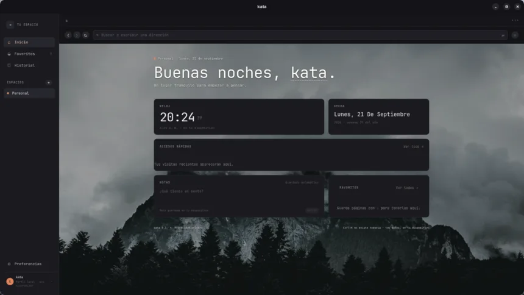
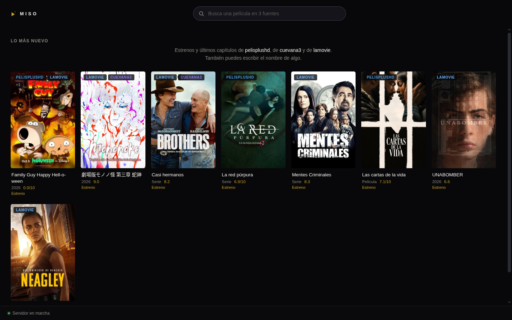
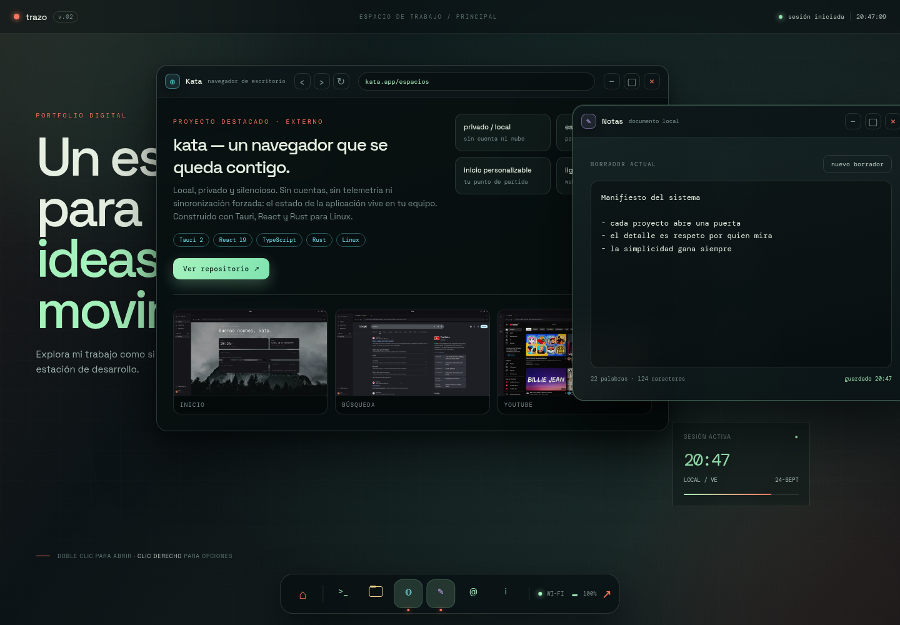
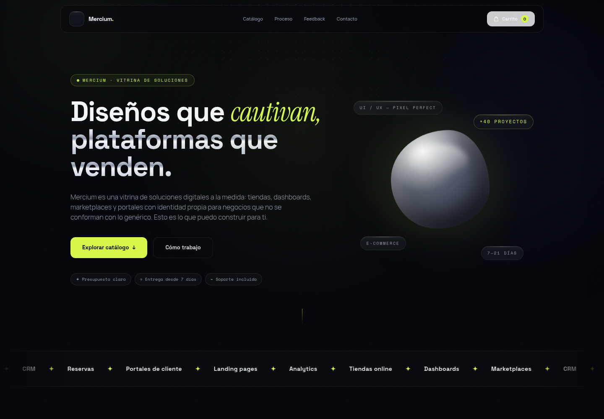
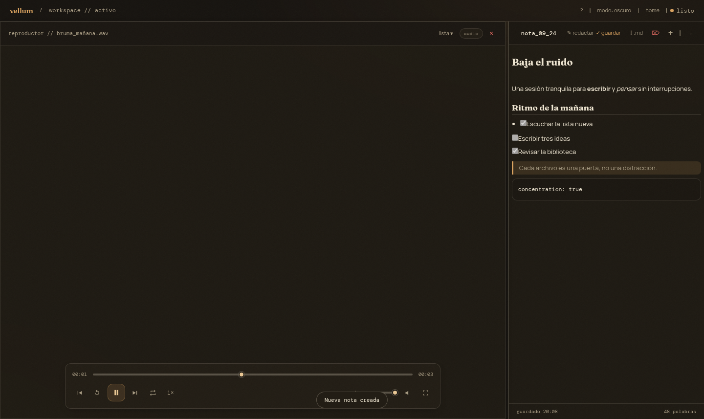

portfolio · 2026 — seis proyectos en un trazo
Enmanuel Pirela
Dibujo productos digitales de punta a punta: interfaces, dashboards y aplicaciones de escritorio que dejan huella.
Cada interfaz empieza como un trazo.
Soy Enmanuel, desarrollador web autodidacta. Desde 2020 construyo productos completos — interfaces, APIs y aplicaciones de escritorio — para entender cómo una idea se dibuja hasta que funciona de verdad.
En 2026 terminé seis proyectos y cada uno tenía una intención: comunicar, vender, monitorear, ordenar, navegar y buscar. Todos empiezan igual: una línea en blanco.
- frontend
- React · TypeScript · JavaScript · HTML · CSS · Tailwind
- backend
- Python · FastAPI · APIs
- desktop
- Tauri · Electron · Vite
- herramientas
- Git · GitHub · Netlify · Chart.js
el recorrido
Seis proyectos, un solo trazo.
Una línea continua. Abro con los dos más complejos —kata y miso— y sigo con el resto del taller.
- 01kataun navegador que se queda contigo
- 02misobusca una vez, encuentra en todos lados
- 03trazoun portfolio que es un sistema
- 04merciumuna landing con intención de tienda
- 05sysdashlos números del sistema, en vivo
- 06vellumun escritorio para ordenar el pensamiento
estación 03 · 2026destacado
kata
un navegador que se queda contigo.
Privado, local y silencioso. Sin cuentas, sin telemetría ni sincronización forzada: el estado vive en el equipo del usuario. Un navegador de escritorio para Linux construido con Tauri.
tauri 2 · react 19 · typescript · rust

estación 04 · 2026destacado
miso
busca una vez, encuentra en todos lados.

Búsqueda federada que consulta varias fuentes a la vez, unifica los resultados en una cuadrícula y reproduce dentro de la app: sin pestañas, sin ventanas emergentes, sin publicidad. Todo ocurre en tu equipo.
electron · node/express · react · typescript
estación 05 · 2026
trazo
un portfolio que es un sistema.
La estación desde la que nació todo esto. Un sistema operativo simulado: arranque, ventanas que se arrastran, dock con magnificación, terminal interactiva y notas que se guardan solas.
html · css · javascript

estación 06 · 2026
mercium
una landing con intención de tienda.

Catálogo, filtros, carrito y checkout con totales calculados al instante. Pensada para captar leads y comunicar valor, no para decorar.
html · tailwind · javascript
estación 07 · 2026
sysdash
los números del sistema, en vivo.
CPU, RAM, disco, red y procesos activos. Una API propia con Python y FastAPI alimenta un panel que no pide permiso para mostrar la verdad.
python · fastapi · chart.js
- kernelprotegido
- trazo.uicorriendo
- api.fastapicorriendo
estación 08 · 2026
vellum
un escritorio para ordenar el pensamiento.

Notas, ideas y contenido en un workspace visual con calma. Modo claro y oscuro para que el foco esté siempre en la idea, no en la herramienta.
vite · electron · tailwind